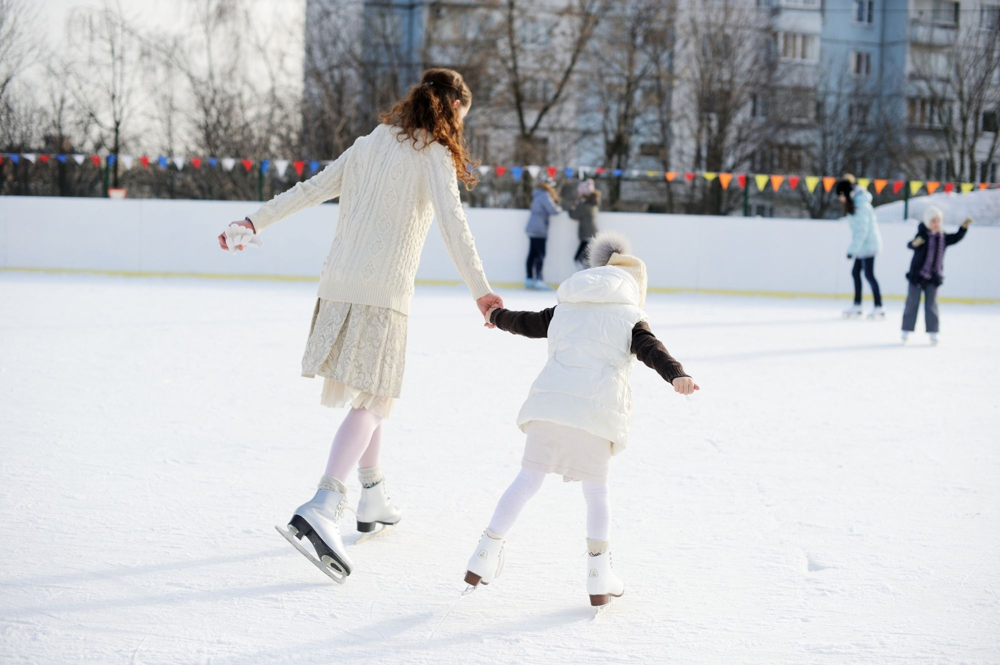

Slidošana ir cilvēka pašpiedziņa un slīdēšana pa ledus virsmu, izmantojot slidas ar metāla lāpstiņām . Cilvēki slido dažādu iemeslu dēļ, tostarp atpūtas (izklaides), vingrošanas, sacensību sporta un pārvietošanās dēļ . Slidot var uz dabiski aizsalušām ūdenstilpēm, piemēram, dīķos, ezeros, kanālos un upēs; un uz mākslīgām ledus virsmām, piemēram, ledus hallēm , hokeja laukumiem un arēnām gan iekštelpās, gan ārā.
